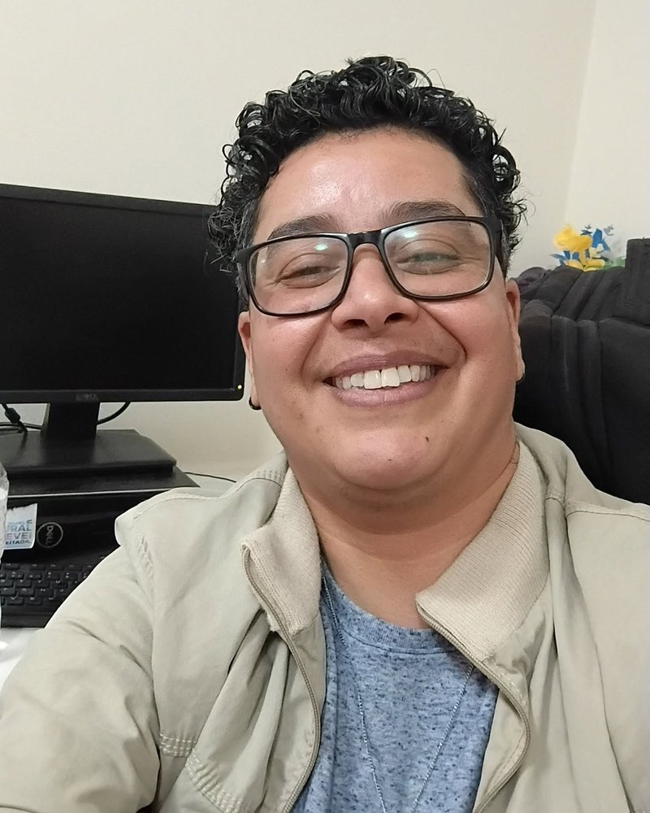

Uma trajetória construída em lógica
Sou Amin Karzazi, e estou atualizando meus conhecimentos em Java, Spring Boot e IA aplicada. Moro em São Paulo e sou fundador da AminTech Solutions.
Sou formado em Matemática e Informática pela Universidade Mohammed V-Agdal, em Rabat, no Marrocos. Fiz uma formação técnica em Java J2EE e uma formação em pedagogia, e trabalhei como professor de matemática. Ao me mudar para o Brasil, aprendi o português, concluí o ensino médio e decidi voltar ao desenvolvimento de software, agora com foco em IA aplicada e automação.
Hoje faço o curso técnico em Administração e Logística, para entender como as empresas funcionam por dentro, e desenvolvo a AminTech Solutions: um projeto de estudo com o código publicado no GitHub.
Foco de estudo: Java, Spring Boot, APIs REST, LLMs, RAG, Agentes de IA, MCP e Automação.
Université Mohammed V-Agdal, Faculdade de Ciências, Rabat, Marrocos
Bacharelado em Matemática e Informática (Licence d'Études Fondamentales)
Base em lógica e programação.
OFPPT — Instituto Especializado de Tecnologia Aplicada NTIC, Rabat, Marrocos
Formação Qualificante em Análise e Desenvolvimento Java J2EE
Formação técnica, com foco em concepção e desenvolvimento de sistemas usando Java J2EE.
Centre Régional des Métiers de l'Éducation et de Formation (CRMEF), Rabat, Marrocos
Formação em Pedagogia — Ensino Secundário Colegial, especialidade Matemática
Atuação como professor de matemática no ensino fundamental II.
Ministério da Educação Nacional, Rabat, Marrocos
Professor de Matemática do Ensino Secundário (EF II)
Atuação no sistema oficial de ensino público, aplicando metodologias pedagógicas e desenvolvendo o raciocínio lógico-matemático de jovens estudantes.
Chegada ao Brasil — Novo recomeço
Adaptação cultural e aprendizagem da língua portuguesa
Imersão no idioma português, conclusão do ensino médio brasileiro para aprender a língua e a cultura, integrar-se com os brasileiros e conhecer o sistema educacional do país, e primeiras experiências no mercado local.
Curso Técnico em Administração
Desenvolvimento de competências corporativas
Formação focada em processos organizacionais, gestão de negócios e logística, alinhando a visão administrativa ao desenvolvimento de soluções tecnológicas inteligentes.
Hoje
AminTech Solutions
Estudo e aplicação de Java, IA generativa e automação de processos.
Minhas habilidades
Um perfil que junta matemática, programação, ensino e visão de negócios.
Desenvolvimento
- Java
- Java EE / J2EE
- Spring Boot
- APIs REST
- HTML
- CSS
- PHP
- C
- VB.NET
Bancos de dados
- SQL
- MySQL
- Oracle
- SQL Server
- Hibernate
IA e automação
- IA generativa
- LLMs via API
- RAG
- Agentes de IA
- MCP
- Automação de processos
Matemática
- Estatística
- Pesquisa operacional
- Análise numérica
- MATLAB
- Maple
Modelagem e redes
- UML
- Merise
- LAN / WAN
- TCP/IP
- DNS
Negócios e comunicação
- Administração
- Logística
- Marketing digital
- Pacote Office
- Ensino de matemática
Meus projetos
Clique em um bloco para abrir o projeto.
AminTech Solutions
Portfólio da minha marca, com estudos e projetos em Java, Spring Boot, IA generativa e automação de processos.
Abrir o siteGeneral Knowledge Quiz (Quiz de conhecimentos gerais)
Quiz interativo com 10 perguntas de múltipla escolha e escolha de categoria. A interface e as perguntas são em inglês; as perguntas vêm da API Open Trivia Database. Feito com HTML, CSS e JavaScript.
Abrir o siteNome do site (em breve)
Descrição do projeto: escreva aqui o que ele faz.
Em breveNome do site (em breve)
Descrição do projeto: escreva aqui o que ele faz.
Em breveVamos conversar
Aberto a oportunidades, projetos de automação e parcerias.